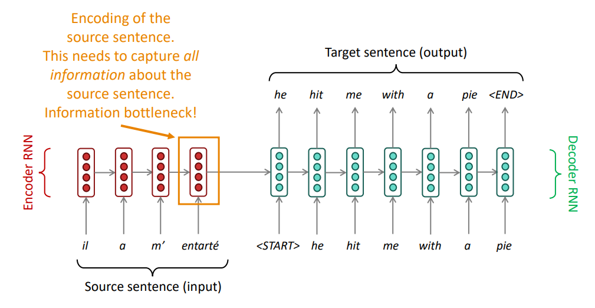

Attention
1. Sequence-to-sequence: the bottleneck problem

2. Sequence-to-sequence with attention
Architecture

Equations
Benefits
- Attention significantly improves NMT performance
- Attention provides more "human-like" model of the MT process
- Attention solves the bottleneck problem
- Attention helps with vanishing gradient problem
- Attention provides some interpretability
Attention Variants
There are several ways you can compute \(\mathbf{e}\in \mathbb{R}^N\), from \(\mathbf{h_1}, \mathbf{h_2},..., \mathbf{h_N} \in \mathbb{R}^{d1}\) and \(\mathbf{s}\in \mathbb{R}^{d_2}\):
- Basic dot-product attention: \(\mathbf{e}_{t,i} = \mathbf{s}^{T}_{t}\mathbf{h}_{i}\in \mathbb{R}\)
- Multiplicative attention: \(\mathbf{e}_{t,i} = \mathbf{s}^{T}_{t}\mathbf{W}\mathbf{h}_{i} \in \mathbb{R}\)
- Reduced-rank multiplicative attention: \(e_i = s^T(\mathbf{U^T}\mathbf{V})h_i = (\mathbf{U}s)^T (\mathbf{V}h_i)\)
- Additive attention: \(\mathbf{e}_{t,i} = \mathbf{v}^{T}tanh(\mathbf{W}_{1}\mathbf{h}_{i}+ \mathbf{W}_{2}\mathbf{s}_{t})\)
More general definition of attention
Given a set of vector values, and a vector query, attention is a technique to compute a weighted sum of the values, dependent on the query.